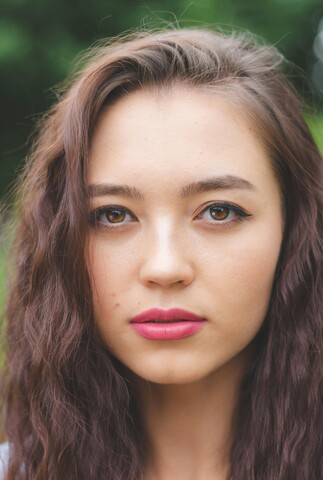
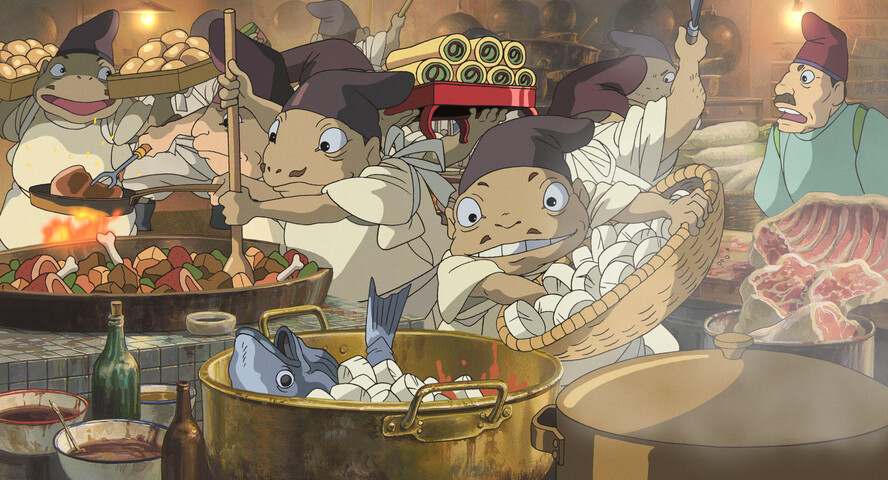

2026-01-05
mpv はフリーのメディアプレーヤーで、次の特徴がある。
Google の超解像技術から着想を得たアップスケーラー。
https://github.com/bjin/mpv-prescalers
wget https://raw.githubusercontent.com/bjin/mpv-prescalers/refs/heads/master/compute/ravu-lite-r3.hook
mkdir -p ~/.config/mpv/shaders
mv ravu-lite-r*.hook ~/.config/mpv/shaders/~/.config/mpv/mpv.conf に次の行を追加。
# ビデオ出力ドライバー
# https://mpv.io/manual/stable/#video-output-drivers
vo=gpu-next
# グラフィックスAPI
# https://mpv.io/manual/stable/#options-gpu-api
gpu-api=auto
# ハードウェアビデオデコードを有効にする
# https://mpv.io/manual/stable/#options-hwdec
hwdec=auto
# av1 がサポートされていない場合は「av1,」を削除（Ryzen 5 5600G など）
# https://mpv.io/manual/stable/#options-hwdec-codecs
hwdec-codecs=h264,vc1,hevc,vp8,vp9,av1,prores,prores_raw,ffv1,dpx
# アップスケーラー
# https://mpv.io/manual/stable/#options-glsl-shaders
# glsl-shader はシェーダーリストにシェーダーを1個追加し、
# glsl-shaders は既存のシェーダーリストを上書きする。
# ~~/ は mpv の設定ディレクトリを表す。
glsl-shader="~~/shaders/ravu-lite-ar-r3.hook"
# ダウンスケーラー
# https://mpv.io/manual/stable/#options-dscale
dscale=lanczos
# オーディオ出力ドライバー
# https://mpv.io/manual/stable/#audio-output-drivers-ao
ao=pipewire
# 音声のみのファイルでもウィンドウを表示
# https://mpv.io/manual/stable/#options-force-window
force-window=yes
# ウィンドウを最大化
window-maximized=yes
# ターミナル出力の冗長性を減らす
quiet=yes
# オンスクリーンコントローラー
# https://mpv.io/manual/stable/#on-screen-controller-timetotal
# 右下の「残り時間」を「全体時間」に変更。
script-opts=osc-timetotal=yes~/.config/mpv/input.conf に次の行を追加。デフォルトはこちら。
# 右クリックで一時停止しない
MBTN_RIGHT ignore
# マウスホイールで音量を変更しない
WHEEL_UP ignore
WHEEL_DOWN ignore
# チルトホイールで10秒移動しない
WHEEL_LEFT ignore
WHEEL_RIGHT ignore
# PGUP/PGDWN で10分移動
PGUP seek 600
PGDWN seek -600
# Shift+PGUP/PGDWN でチャプター移動
Shift+PGUP add chapter 1
Shift+PGDWN add chapter -1
# マウスの進むボタンと戻るボタンでプレイリスト内を移動
# 移動した後プレイリストを2秒表示
MBTN_FORWARD playlist-next; show-text ${playlist} 2000
MBTN_BACK playlist-prev; show-text ${playlist} 2000
# . と , でプレイリスト内を移動
# 移動した後プレイリストを2秒表示
. playlist-next; show-text ${playlist} 2000
, playlist-prev; show-text ${playlist} 2000
# i でファイル情報の表示をトグル
# I でファイル情報を一時的に表示
i script-binding stats/display-stats-toggle
I script-binding stats/display-stats
# Ctrl+d で再生中のファイルをゴミ箱に移動
Ctrl+d run gio trash "${path}"; playlist-remove current; show-text "\"${filename}\" をゴミ箱に移動しました" 5000
# Esc で終了
ESC quitモニターに超解像技術が搭載されている場合はオフにする。アップスケーラーの効果がわかりづらくなるので。
REGZA をモニターにしている場合は次のようにする。
低遅延モード: オン
レゾリューションプラス: オフ
ヒストグラムバックライト制御: オン
質感リアライザー: オート
質感リアライザーはオフにすると全体の色味が白っぽくなるのでオートにする。
Google の超解像技術から着想を得たアップスケーラー。
https://github.com/bjin/mpv-prescalers
私の環境では compute ディレクトリのものが最速だった。
ravu-lite-ar はアンチリンギングを行う。
wget https://raw.githubusercontent.com/bjin/mpv-prescalers/refs/heads/master/compute/ravu-lite-r3.hook
wget https://raw.githubusercontent.com/bjin/mpv-prescalers/refs/heads/master/compute/ravu-lite-ar-r3.hook
mkdir -p ~/.config/mpv/shaders
mv ravu-lite-*.hook ~/.config/mpv/shaders/CNN（畳み込みニューラルネットワーク）ベースのアップスケーラー。
https://github.com/funnyplanter/CuNNy
wget https://raw.githubusercontent.com/funnyplanter/CuNNy/refs/heads/master/mpv/ds/CuNNy-fast-DS.glsl
wget https://raw.githubusercontent.com/funnyplanter/CuNNy/refs/heads/master/mpv/soft/CuNNy-fast-SOFT.glsl
mv CuNNy-*.glsl ~/.config/mpv/shaders/アニメコンテンツを対象としたアップスケーラー。
https://github.com/Artoriuz/ArtCNN
wget https://raw.githubusercontent.com/Artoriuz/ArtCNN/refs/heads/main/GLSL/ArtCNN_C4F16.glsl
wget https://raw.githubusercontent.com/Artoriuz/ArtCNN/refs/heads/main/GLSL/ArtCNN_C4F16_DS.glsl
mv ArtCNN_C4F*.glsl ~/.config/mpv/shaders/CNN (畳み込みニューラルネットワーク)
を使用した超解像アップスケーラー。
https://github.com/igv/FSRCNN-TensorFlow/releases
wget https://github.com/igv/FSRCNN-TensorFlow/releases/download/1.1/FSRCNNX_x2_8-0-4-1.glsl
mv FSRCNNX_x2_*.glsl ~/.config/mpv/shaders/1080pアニメの4K化に最適化されたシェーダー。
https://github.com/bloc97/Anime4K
本来はいくつかのシェーダーを組み合わせて使用するが、標準の組み合わせだと色化けすることがあるので、ここでは Anime4K_Upscale_Denoise_CNN_x2 のみを使用する。
wget https://raw.githubusercontent.com/bloc97/Anime4K/refs/heads/master/glsl/Upscale%2BDenoise/Anime4K_Upscale_Denoise_CNN_x2_M.glsl
mv Anime4K_Upscale_Denoise_CNN_x2_*.glsl ~/.config/mpv/shaders/Anime4KCPP によって実装されたCNNアルゴリズム。
https://github.com/TianZerL/ACNetGLSL
wget https://raw.githubusercontent.com/TianZerL/ACNetGLSL/refs/heads/master/glsl/ACNet.glsl
mv ACNet.glsl ~/.config/mpv/shaders/以下は紹介のみ。
SSimSuperRes
シャープニングとアンチリンギングを行う。
https://gist.github.com/igv
NVScaler
NVIDIA Image Scaling v1.0.2 の移植。AMDでも使用できる。
https://gist.github.com/agyild
SGSR
Qualcomm Snapdragon Game Super Resolution (GSR) v1 の移植。非常に高速。
https://gist.github.com/agyild
FSR, CAS-scaled
ソースのコメントによると、AMDのガイドラインに従い縦横2倍までしかアップスケールできない。
それ以上のアップスケールは mpv のアップスケーラーが行う。
https://gist.github.com/agyild~/.config/mpv/input.conf に次の行を追加。
# シェーダーの切り替え
CTRL+1 no-osd change-list glsl-shaders set "~~/shaders/ravu-lite-r3.hook"; show-text "ravu-lite-r3.hook"
CTRL+2 no-osd change-list glsl-shaders set "~~/shaders/ravu-lite-ar-r3.hook"; show-text "ravu-lite-ar-r3.hook"
CTRL+3 no-osd change-list glsl-shaders set "~~/shaders/CuNNy-fast-DS.glsl"; show-text "CuNNy-fast-DS.glsl"
CTRL+4 no-osd change-list glsl-shaders set "~~/shaders/CuNNy-fast-SOFT.glsl"; show-text "CuNNy-fast-SOFT.glsl"
CTRL+5 no-osd change-list glsl-shaders set "~~/shaders/ArtCNN_C4F16_DS.glsl"; show-text "ArtCNN_C4F16_DS.glsl"
CTRL+6 no-osd change-list glsl-shaders set "~~/shaders/ArtCNN_C4F16.glsl"; show-text "ArtCNN_C4F16.glsl"
CTRL+7 no-osd change-list glsl-shaders set "~~/shaders/FSRCNNX_x2_8-0-4-1.glsl"; show-text "FSRCNNX_x2_8-0-4-1.glsl"
CTRL+8 no-osd change-list glsl-shaders set "~~/shaders/Anime4K_Upscale_Denoise_CNN_x2_M.glsl"; show-text "Anime4K_Upscale_Denoise_CNN_x2_M.glsl"
CTRL+9 no-osd change-list glsl-shaders set "~~/shaders/ACNet.glsl"; show-text "ACNet.glsl"
CTRL+0 no-osd change-list glsl-shaders clr ""; set scale lanczos; show-text "lanczos"画像の改変と再配布を許可してくださっている皆様に感謝。

Source: “Shallow
Focus Photography of Woman” by Liam Anderson
License: https://www.pexels.com/ja-JP/license/
元の画像を縦480にリサイズしたものを全画面で表示する。
縦横2倍以上にアップスケールしないと効果が分かりづらい。
mpv https://utuhiro78.github.io/linuxplayers/images/mpv/pexels-liam-anderson-411198-1458332_480.jpg --fs --pause「Ctrl」を押したまま 0 から 9 まで押していき、違いを比較する。
シャープネスが強いアップスケーラーは髪がごわつく。
アニメ特化のアップスケーラーは髪がのっぺりする。
縦480へのリサイズは次のように行った。
for file in *.jpg
do
magick "$file" -resize x480 -quality 90 "${file%.jpg}_480.jpg"
done
# Quality の確認方法
# magick identify -verbose *.jpg | grep Quality
Source: “千と千尋の神隠し
作品静止画” by STUDIO GHIBLI
License: 画像は常識の範囲でご自由にお使いください。
元の画像を縦480にリサイズしたものを全画面で表示する。
mpv https://utuhiro78.github.io/linuxplayers/images/mpv/chihiro030_480.jpg --fs --pause「Ctrl」を押したまま 0 から 9 まで押していき、違いを比較する。
比較した結果 CuNNy-fast-DS.glsl をデフォルトにする場合は、~/.config/mpv/mpv.conf を次のように変更。
# アップスケーラー
glsl-shader="~~/shaders/CuNNy-fast-DS.glsl"lanczos をデフォルトにする場合
# アップスケーラー
scale=lanczos
Source: “Aerial
view of a boat sailing in the sea” by Burak Evlivan
License: https://www.pexels.com/ja-JP/license/
縦480にリサイズした動画をノーウェイトで全画面再生して、終了までの時間を計測。
縦1080の動画を縦1080のモニターで再生しても、アップスケーラーの負荷はかからない。
wget -N https://utuhiro78.github.io/linuxplayers/images/mpv/12393381_3840_2160_60fps_480.mp4
# SGSR.glsl で再生する場合
time mpv --audio=no --untimed=yes --video-sync=display-desync --vulkan-swap-mode=immediate --opengl-swapinterval=0 --glsl-shaders="~~/shaders/SGSR.glsl" --fs 12393381_3840_2160_60fps_480.mp4結果が「real 0m3.869s」のように表示される。
動画の収録時間は25秒なので、25秒以上かかるものはコマ落ちする。
縦480へのリサイズは次のように行った。
ffmpeg -i 12393381_3840_2160_60fps.mp4 -vf scale=854:480:flags=lanczos 12393381_3840_2160_60fps_480.mp4I wrote mpv_shader_benchmark.py to measure the processing speed.
python mpv_shader_benchmark.py <shaders>| Upscaler | Time (sec) |
|---|---|
| SGSR | 3.88 |
| Lanczos | 4.01 |
| NVScaler | 5.03 |
| ravu-lite-r2_compute | 6.83 |
| ravu-lite-r3_compute | 6.92 |
| ravu-lite-ar-r3_compute | 7.02 |
| ravu-lite-r4_compute | 7.18 |
| ravu-lite-ar-r4_compute | 7.28 |
| ravu-lite-r4_gather | 7.85 |
| ravu-lite-r4_general | 8.22 |
| Anime4K_Upscale_Denoise_CNN_x2_S | 8.4 |
| adaptive-sharpen | 9.07 |
| CuNNy-fast-SOFT | 9.75 |
| Anime4K_Upscale_Denoise_CNN_x2_M | 10.35 |
| SSimSuperRes | 10.37 |
| CuNNy-fast-DS | 10.47 |
| CuNNy-4x12-SOFT | 12.72 |
| FSRCNNX_x2_8-0-4-1 | 13.47 |
| Anime4K_Upscale_CNN_x2_L | 14.93 |
| Anime4K_Upscale_Denoise_CNN_x2_L | 15.25 |
| CuNNy-4x12-DS | 15.52 |
| ACNet | 16.3 |
| CuNNy-4x16-SOFT | 16.55 |
| ArtCNN_C4F16 | 19.07 |
| ArtCNN_C4F16_DS | 19.17 |
| AiUpscale_Fast_2x_Photo | 21.92 |
| CuNNy-4x16-DS | 23.2 |
| Anime4K_Upscale_Denoise_CNN_x2_VL | 25.76 |
| FSRCNNX_x2_16-0-4-1 | 26.43 |
| CuNNy-4x16-SOFT-Q | 26.72 |
| CuNNy-4x32-SOFT | 49.8 |
| ArtCNN_C4F32_DS | 55.37 |
| ArtCNN_C4F32 | 55.62 |
Test system:
| CPU | Ryzen 5 5600G |
| GPU | Integrated graphics |
| Monitor | 1920x1080 |
ダウンスケーラーをインストール。
# SSimDownscaler
# https://gist.github.com/igv
wget https://gist.githubusercontent.com/igv/36508af3ffc84410fe39761d6969be10/raw/38992bce7f9ff844f800820df0908692b65bb74a/SSimDownscaler.glsl
mv SSimDownscaler.glsl ~/.config/mpv/shaders/~/.config/mpv/input.conf を一時的に変更。
# シェーダーの切り替え
CTRL+1 no-osd change-list glsl-shaders clr ""; set dscale hermite; show-text "hermite"
CTRL+2 no-osd change-list glsl-shaders clr ""; set dscale lanczos; show-text "lanczos"
CTRL+3 no-osd change-list glsl-shaders set "~~/shaders/SSimDownscaler.glsl"; set dscale hermite; set linear-downscaling no; show-text "SSimDownscaler.glsl"こちらの画像をダウンロード。
Source: “Shallow Focus Photography of Woman” by Liam Anderson
縦1000にダウンスケールして表示。
mpv pexels-liam-anderson-411198-1458332.jpg --autofit=x1000 --window-maximized=no --pause「Ctrl」を押したまま 1 から 3 まで押していき、違いを比較する。
1 から順に髪のシャープネスが強くなっていく。
比較した結果 SSimDownscaler をデフォルトにする場合は、~/.config/mpv/mpv.conf を次のように変更。
# ダウンスケーラー
linear-downscaling=no
glsl-shader="~~/shaders/SSimDownscaler.glsl"lanczos をデフォルトにする場合
# ダウンスケーラー
dscale=lanczos